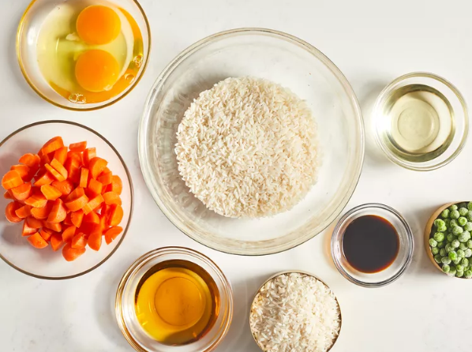
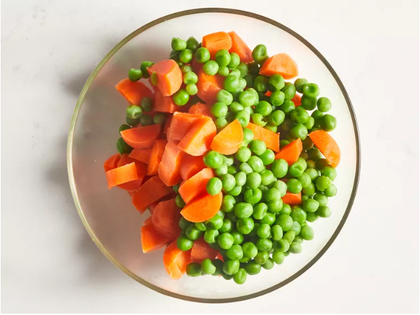
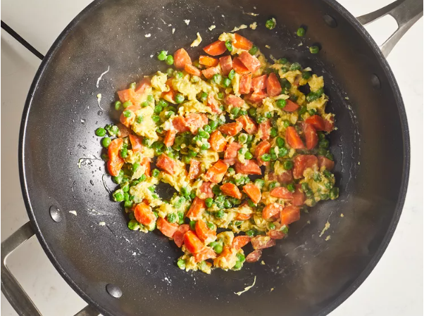
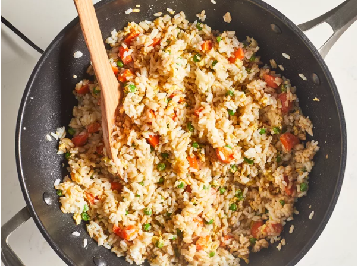
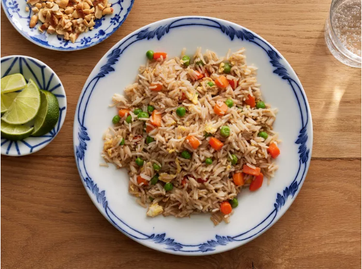

- Assemble Ingredients

Image from DOTDASH MEREDITH FOOD STUDIOS
- Place carrots in a small saucepan and cover with water. Bring to a low boil and cook for 3 to 5 minutes. Stir in peas, then immediately drain in a colander.

Image from DOTDASH MEREDITH FOOD STUDIOS
- Heat a wok over high heat. Pour in vegetable oil, then stir in carrots, peas, and garlic; cook for about 30 seconds. Add eggs; stir quickly to scramble eggs with vegetables.

Image from DOTDASH MEREDITH FOOD STUDIOS
- Stir in cooked rice. Add soy sauce and toss rice to coat. Drizzle with sesame oil and toss again.

Image from DOTDASH MEREDITH FOOD STUDIOS
- Serve hot and enjoy!

Image from DOTDASH MEREDITH FOOD STUDIOS